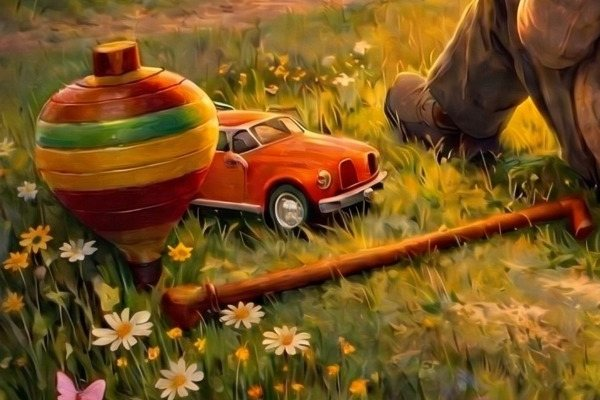
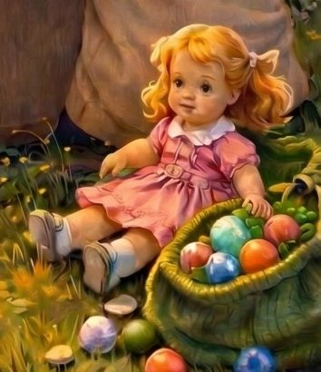

Cuidado con amor
Acompañamos a cada residente con paciencia y ternura, como lo haríamos con alguien de nuestra propia familia. Conocemos sus nombres, sus gustos y sus horas favoritas del día.

Hogar geriátrico
donde la infancia vuelve a casa
Una casa de campo donde cada persona mayor es escuchada, acompañada y celebrada, con la calma y el juego de sus mejores recuerdos.
Tres ideas sencillas que guían cada día en la casa.
Acompañamos a cada residente con paciencia y ternura, como lo haríamos con alguien de nuestra propia familia. Conocemos sus nombres, sus gustos y sus horas favoritas del día.
Cuentos, canciones, huerta, juegos de mesa y trompos. Actividades pensadas para recordar, reír y sentirse útil, siempre a su propio ritmo.
Una casa de campo con jardines, sombra de árboles y atardeceres para mirar en compañía. Aquí el día no corre: se disfruta.
Las páginas de un álbum que se llena todos los días.


Mi mamá llegó muy callada. Hoy nos recibe en el jardín con un trompo en la mano y nos cuenta quién ganó la partida de parqués.
Podemos visitarlo a cualquier hora razonable, y siempre hay alguien que nos cuenta cómo estuvo su día.
Fui a visitar a mi abuela y terminé jugando canicas con ella y sus amigas. Hacía años que no la veía reír así.
Ven a tomar un café con nosotros y recorre los jardines sin compromiso.